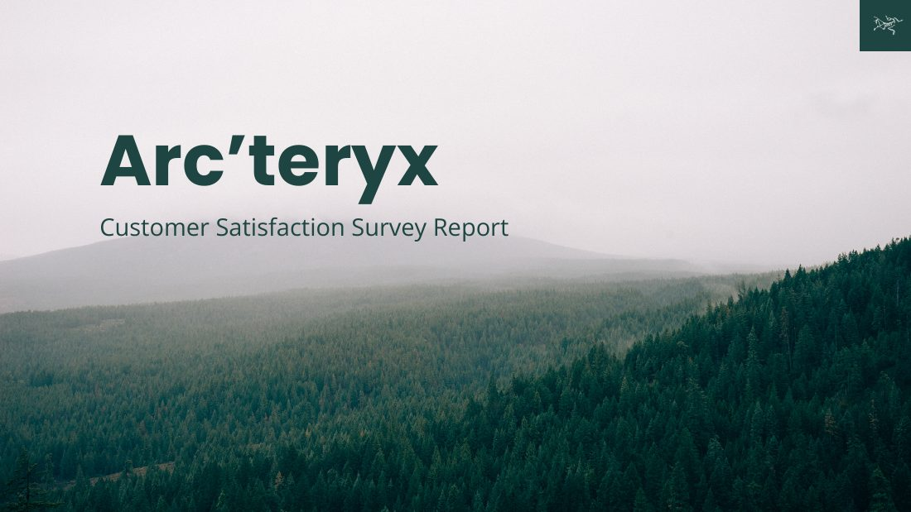

A customer satisfaction study examining how quality, exclusivity, community and brand identity influence satisfaction and loyalty across fashion and outdoor audiences.
View full report ↗
Arc'teryx faces a positioning challenge: maintaining authenticity and technical credibility while appealing to a fashion-forward streetwear audience.
The research focused on the factors shaping consumer perception, purchasing behaviour, customer satisfaction and long-term loyalty across these segments.
A 35-question questionnaire was developed for Arc'teryx users in fashion and outdoor segments. It included screening and demographic blocks plus six blocks tied to the customer satisfaction model.
Responses were gathered through relevant subreddits, Instagram, friends and family, then compiled into one dataset for analysis.
Quality carried the strongest statistical weight on customer satisfaction, with a regression beta of .545. Respondents also rated Arc'teryx strongly across reliability, craftsmanship and appearance.
Brand identity also showed substantial importance to satisfaction, while exclusivity and community were less impactful in the model.
The research suggests protecting Arc'teryx's technical credibility and product quality while using brand identity to connect performance heritage with broader lifestyle appeal.